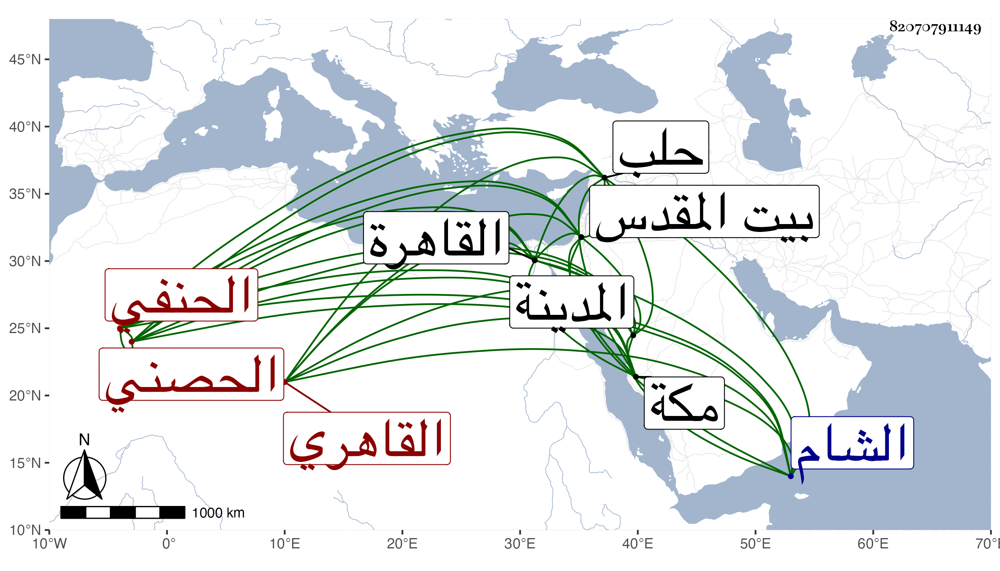

0902Sakhawi.DawLamic.ITO20230111-ara1.EIS1600.820707911149
Biography ID: 820707911149
526
محمد بن جمعة بن محمد بدر الدين بن الزين الحصني الأصل القاهري الحنفي المعروف بأبيه . ولد كما أخبرني به في ثاني عشر صفر سنة اثنتين وأربعين وثمانمائة وترجح عنده أنه في سنة ست وأربعين وكان أبوه دلالا فنشأ ابنه ذكيا واشتغل وأخذ عن السنهوري في العربية والبيان ثم عن التقي الحصني في المنطق والمعاني والبيان والصرف والتفسير وأصول الفقه وكذا أخذ عن التقي الشمني والأمين الأقصرائي والكافياجي والعلاء الحصني ، ومما أخذه عن الأمين تقسيم الكافي شرح الوافي والفقه عن الزين قاسم ، وحج مرارا وجاوز في الحرمين وقرأ بالمدينة على أبي الفرج المراغي ، وزار بيت المقدس مرارا من جملتها في سنة تسع صحبة ابن الطرابلسي ، ودخل الشام غير مرة وأخذ عن الشهاب الزرعي وخطاب وغيرهما كالبرهان الباعوني وكذا دخل حلب ، وله عدة مقدمات في النحو والصرف وكذا في الفقه لكنها لم تكمل وغير ذلك ، وتلمذ لابن أخت الشيخ مدين وأقرأ ابن الكمال وعد في الفضلاء البارعين المتميزين بحيث رد عل البقاعي ، وهو ممن ينتمي إلى ابن عربي كالزين الابناسي وقد استقر في إمامة قبة الدوادار وخطابتها عقب إعراض ابن دمرداش عنها ، ورتب له السلطان خمسمائة زيادة على معلومهما بل عينه برفقة الرسول لملك الروم ابن عثمان وأعطاه مبلغا مع كونه لو انفرد لكفاه سنة كثيرة ، وفضائله شهيرة وأدبه كثير وعقله غزير ومحاضرته متينة ومحاورته محكمة رزينة ، وقد تكرر تردده إلي بالقاهرة ثم لقيته بمكة حين قدومه لها هو وحسين نزيل القبة الدوادارية من أثناء سنة ثمان وتسعين ورأيت منه تفصيل ما أجملته ولم يلبث أن رجع بحرا بعد انفصال الموسم وجاء كتابه من الينبوع المشتمل على أبلغ عبارة وأفصح إشارة زاده الله من إفضاله ووصله سالما إلى انتهاء آماله ، وقد رأيته قرض مجموع التقي البدري وأطال وكان من قوله :
| يا جامعا أنا في نباه واصف | وهو الخطيب لذاك فيما حاز جمعه |
| خذها عروسا بنت وقت تنجلي | في وصف حليك بالبيان مرصعه |
وقوله :
| يا جامعا مجموعه قد حوى | كل المعاني فاغتدي أوحدا |
| جمعت جمعا ماله مشبه | فيا له جمعا غدا مفردا |
وهو الذي كتب عن العلاء بن بردبك تقريضه البديع للمجموع المشار إليه وافتتحه بوصفه بشيخنا ، وقد سمع هو وأبوه على السيد النسابة والنور البارنباري والشمس التنكزي الحريري في مسلم بقراءتي ، وتلاعب به الشعراء كالشهاب بن صالح وابن الكماخي بما لم يتدبروا عاقبته .
